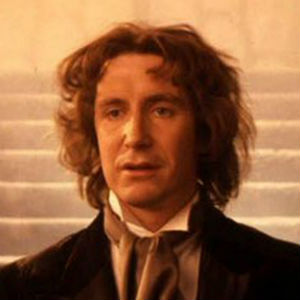

Portrayed by Paul McGann.
|  | McGann was born in Kensington, Liverpool, England in 1959 into a Roman Catholic family. His mother, Claire, was a teacher, and his father was a metallurgist. His parents encouraged him and his siblings to develop their talents from an early age. McGann's talents were further developed when he attended Cardinal Allen Grammar school in West Derby, Liverpool. One of McGann's teachers advised him to enter the Royal Academy of Dramatic Arts and to pursue a career as an actor. Acting on his teacher's advice, McGann enrolled at the Royal Academy and went on to enjoy a successful acting career spanning over two decades. |